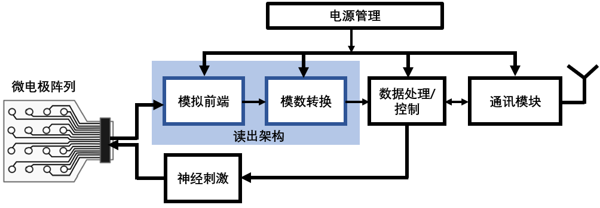
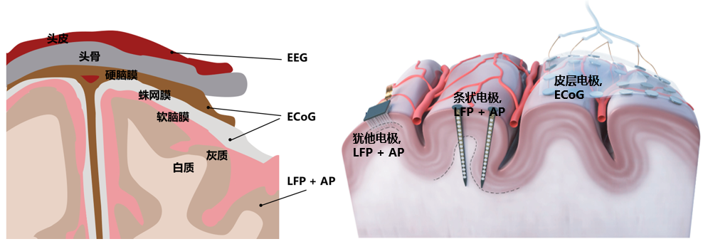
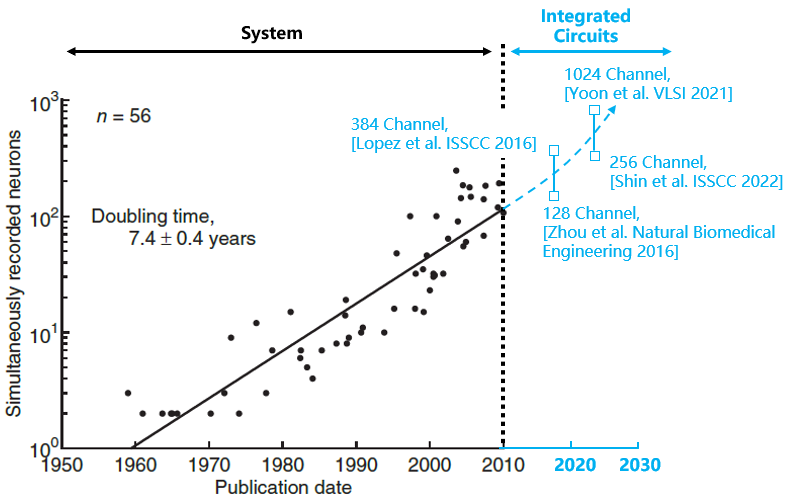

侵入式脑机接口芯片概述
侵入式脑机接口芯片主要完成脑组织内电极信号的放大、采样、数据处理以及刺激功能，其主要组成如图8-1所示。其中，前置放大器负责放大微弱神经电信号，采样与转换电路对放大后的模拟信号进行采样和数字化，数据处理单元对数字信号进行数据压缩、特征提取以及处理分析等工作，刺激模块利用电刺激方式进行对神经系统的调控。此外，无线数据传输模块能够通过无线方式传输神经信号或特征，避免有线连接带来的创口。无线能量传输模块则通过外部供能降低或消除系统对电池的需求。

图8-1 侵入式脑机接口芯片总体结构
如图8-2所示，侵入式脑机接口根据电极形式以及植入位置的不同，通常可采集皮层脑电图（Electrocorticography，ECoG），局部场电位（local field potential，LFP）或者动作电位（action potential，AP）[3, 4]。ECoG信号的电压幅值在0.01至1 mV，频率范围在0.01至200Hz范围。LFP的电压幅值在0.5 mV至5 mV范围，频率范围在0.01Hz至500Hz。AP信号的电压幅值在0.01 mV至5mV，频率范围在100Hz至10k范围[5]。芯片中模拟前端放大器根据系统需求的不同，需要对感兴趣的信号进行放大，并同时抑制相关噪声。
经放大器放大后，神经信号通过模数转换器（analog to digital converter，ADC）转换为更具有抗噪特性的数字信号。由于脑机接口系统一般有数十至上百通道，伴随而来的是大量数据的产生。以100通道，20kHz采样率和10比特采样精度的典型系统为例，系统数据率将达到20Mbps。因此，高速且低功耗的数据传输电路对侵入式脑机接口尤为重要。为缓解带宽压力，可以对信号进行数据压缩，例如直接提取脉冲信号而非保留所有原始信号，或者仅提取数据的特征。

图8-2 侵入式脑机接口信号以及电极特点
侵入式脑机接口芯片的主要优势在于可以在保证数据采集和传输等质量的前提下，降低脑机接口系统的功耗和尺寸，并提高系统可采集的神经通道数量。最近几年发表的脑机接口芯片单个通道的功耗已经在1-10uW之间，每个通道的面积已经在0.005mm2-0.02mm2之间。根据自然杂志的研究报道[6]，脑机接口呈现出类似于“摩尔定律”的发展规律，每隔7至7.5年，脑机接口所能够直接采样的通道数量翻倍，如图8-3所示。以近年的研究成果为例，欧洲的Neuralpixel已实现了超过300通道神经信号采集的脑机接口芯片[7]，而美国的Neuralink公司更是将采集通道数量提升至1024[8]。

图8-3 侵入式脑机接口向着高通量方向持续发展